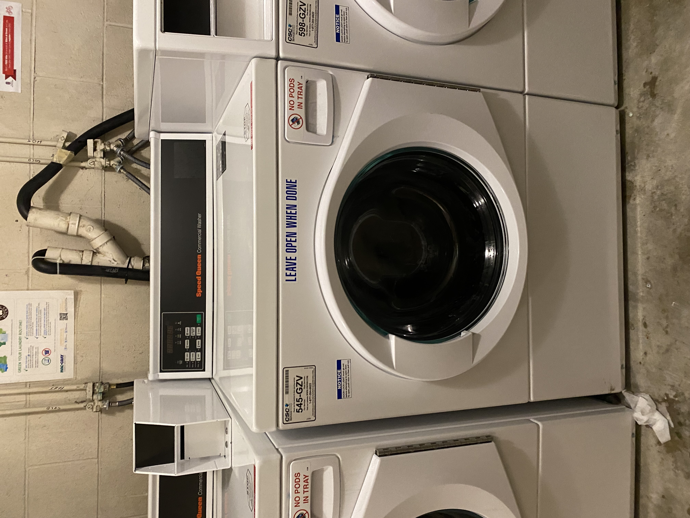
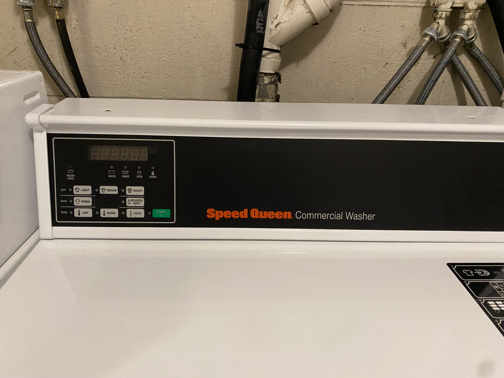
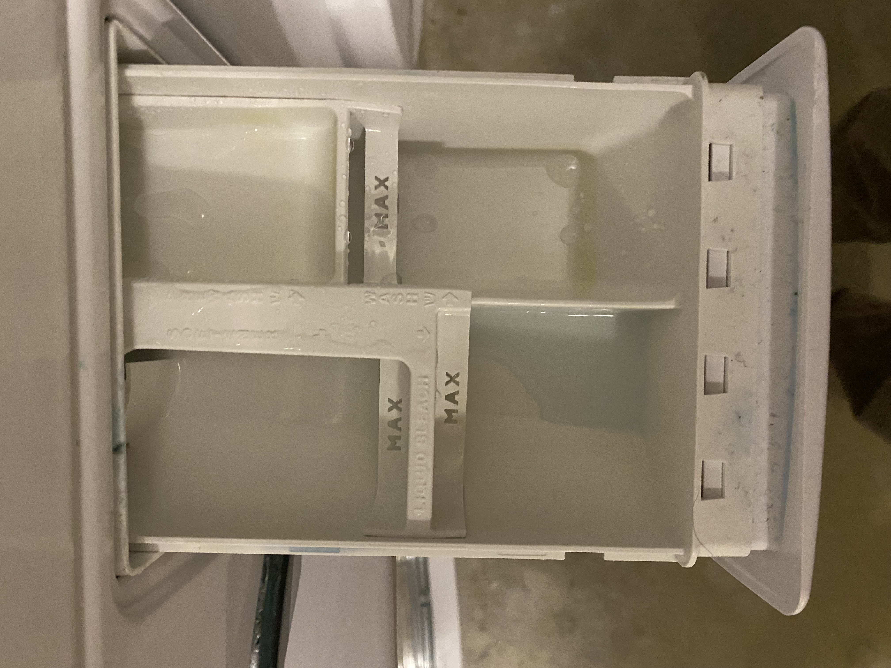
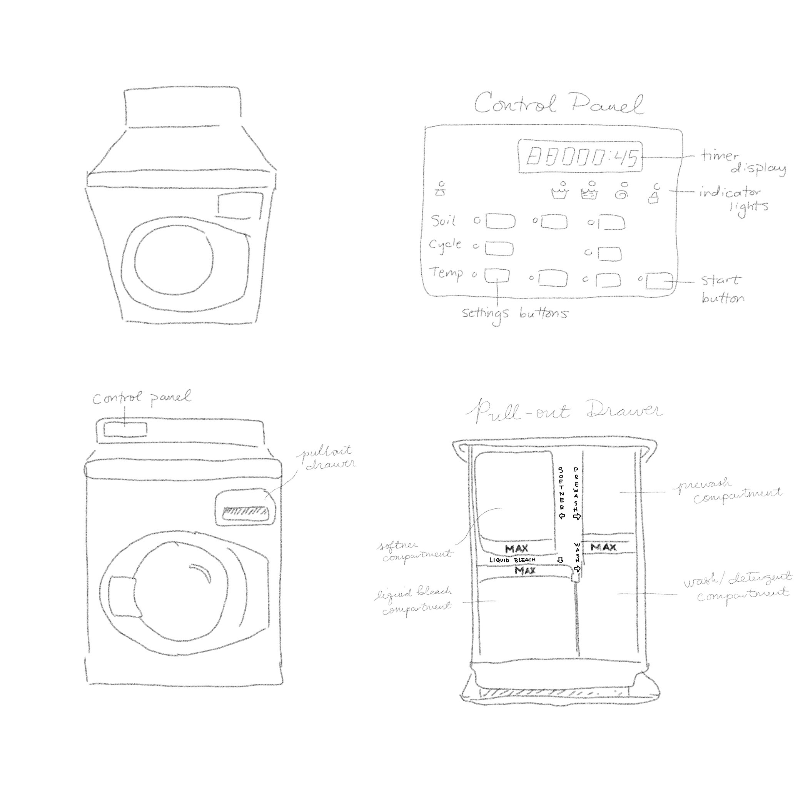
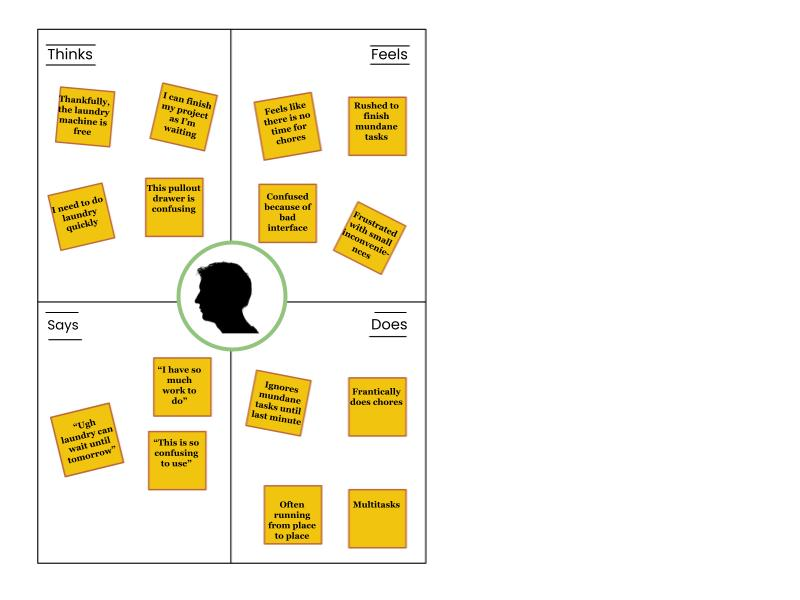
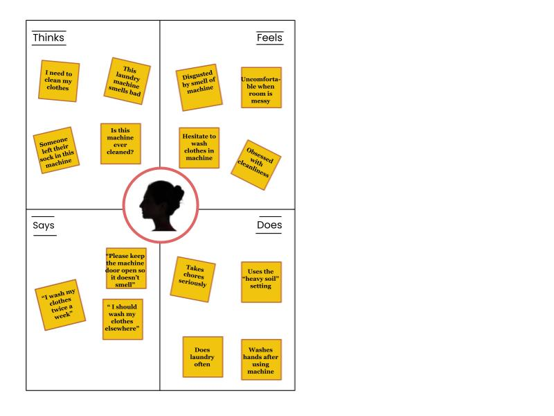

Preparation
To prepare, we will first choose an accessible interface in public, prepare interview questions,
and sketch the interface with its key interactive components.
- Selected Interface: Speed Queen Commercial Washer
- Preparing Questions
- What is something you enjoy when using the washing machine?
- What is something you dislike when using the washing machine?
- What setting on the washing machine do you use most often?
- How do you feel when using the washing machine?
- If you could, what would you change about the design of the washing machine?
- Sketch




Observations
Observing Users Using the Interface
- Most users had trouble while using the pullout drawer.
- Users often squinted or used their phone flashlight to better see the labels in the pullout drawer.
- Some users overfilled the laundry machine over the recommended threshold.
- Users put clothes into the machine before loading detergent and choosing the wash setting.
Interviewing Users
- Most users like the large selection of wash options and like that the using the washing machine is temporarily free.
- Most users don't like the bad odor from the washing machine.
- Most users found the pullout drawer confusing or frustrating to use.
- Users found the labels in the pullout drawer hard to read, especially in dark lighting, because the labels are white letter on white plastic.
- Many users would change the design of the pullout drawer and the maximum capacity of the washing machine.
Personas

